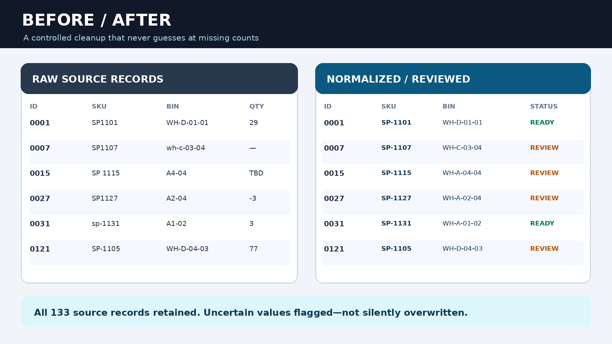
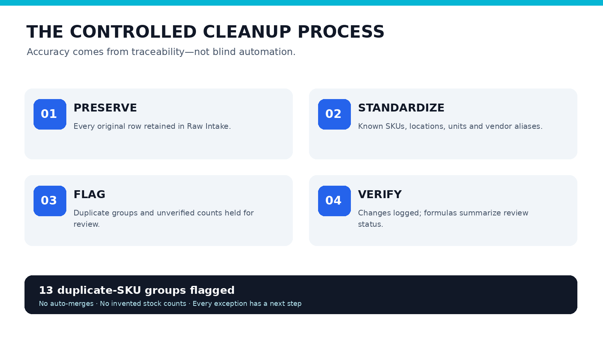
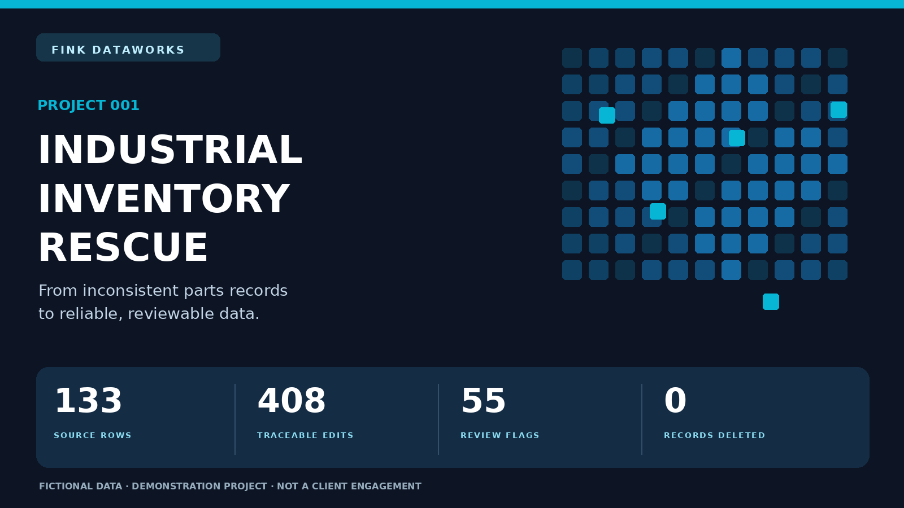

Changes we could justify
- Consistent formatting for recognized part identifiers
- Approved unit and category naming conventions
- Known bin notation and supplier abbreviation mappings
- Whitespace cleanup and valid date formatting
A realistic exercise in cleaning maintenance spare-parts data: keep every source row, correct verified formatting inconsistencies, and make ambiguous records visible before someone acts on them.
Picture a maintenance team depending on exports from several parts-tracking files. The same component shows up with different SKU formats, bins are written in inconsistent shorthand, and counts from different exports don't always agree. A quick find-and-replace could make the sheet prettier while introducing worse errors.
Demonstration only: All part IDs, quantities, locations, suppliers and unit costs were invented. These measurements describe the fictional sample and are not client results.

Normalize what can be demonstrated safely. Treat conflicting, missing or invalid information as decisions for the business owner—not problems to solve by guessing.

Inspect the actual records interactively in your browser or download the original Excel workbook to review its formulas. The example workbook contains a readable dashboard and six supporting worksheets: a starting guide, untouched raw data, normalized records, an issue queue, a complete field-level audit log, and a written rules reference. Rows needing review are not deleted and are not represented as approved inventory.

The downloadable data is intentionally fictional and safe to share publicly. For real customer work, confidential files require secure handling and client authorization.
A source-preserving cleaned file, transparent decision log, organized exceptions with recommended actions, and a handoff that's easy for inventory owners to validate. The aim isn't to automate judgment away. It's to make the work understandable and the risks visible.